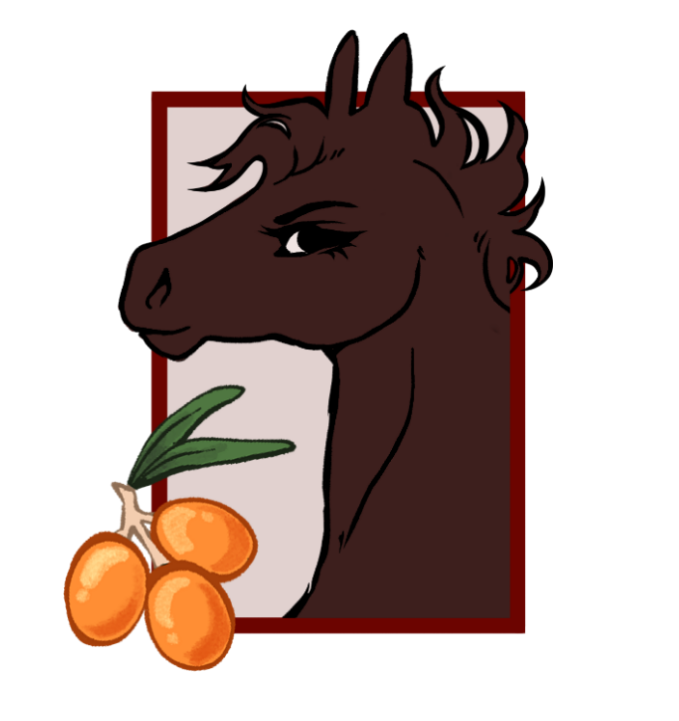
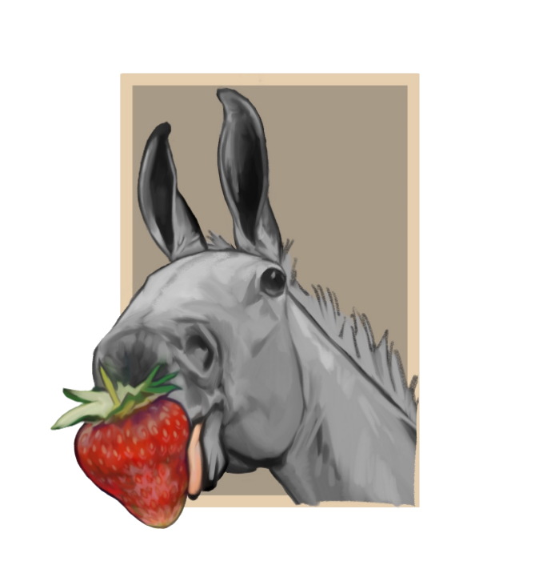
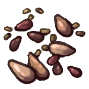

The Berry Tree
Song Quote
 Goose's family is a huge part of his life, and even when his heart calls him to adventure, he knows he'll always have a safe place to return to with them.
Goose's family is a huge part of his life, and even when his heart calls him to adventure, he knows he'll always have a safe place to return to with them.
Contributions here are from everyone! Our potential RUs would be used as Goose's family members
Meet the Berrys

Goose Berry
Stallion • • 6
Gained his name for being a silly goose, and for how he honked as a foal. Loveable and determined.
Pigeon Berry
Stallion • Brother • 3
Wanted to be a pigeon when he grew up. Goose's younger brother, looks up to him a lot. Goofy and earnest.
Dew Berry
Mare • Cousin • 4
Has always loved licking dew off of leaves, earning her name. Spunky and playful, but quiet. Blue's twin sister.
Blue Berry
Stallion • Cousin • 4
Gained his name because he was born under the biggest, bluest sky. Daydreams of being a cowboy. Yeehaw! Dew's twin brother.
Del Berry
Stallion • Brother • 1
Goose named him after a piece of trash found on his journeys. It had buttons that said "Blackberry", "ATET", "Space", or "Del". They called him Space for a while, then decided on Del.
Crow Berry
Stallion • Nephew • 2
Crow is dark in color and was born very late in the season, after first snow, earning him his name. He has a standoffish demeanor, however; he is a gentle soul wrapped in layers of silence.

Hippophae "Fae" Berry
Mare • Aunt • 10
Inherited her name from her great great great great granddam. Travels Europe, and brings home gifts for her family.
Salmon Berry
Stallion • Father • ???
Gained his name ---

Straw Berry
? • Second Cousin Once Removed • 6
They got their name because they ate straw instead of hay one time, and nobody will let them forget it.
"PawPaw" Berry
Stallion • Grandfather • 26
Jolly Ole fella, cheerful, stern with his kids but let's the grand foals run wild in good fun. He earned his title after he became a grand-paw.Goose's Gifts
Trinkets from Goose's family, given to him before his big adventure.

Faberge Egg

Snail Shell

Pigeon Feather

From Nana Berry. She wanted him to have some berry seeds, so he could start a garden of his own wherever he goes.